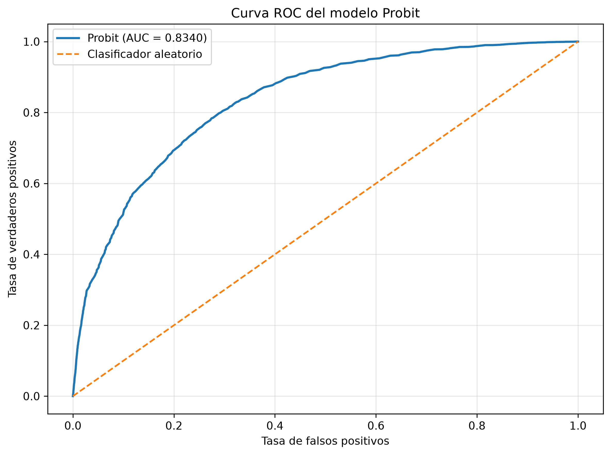
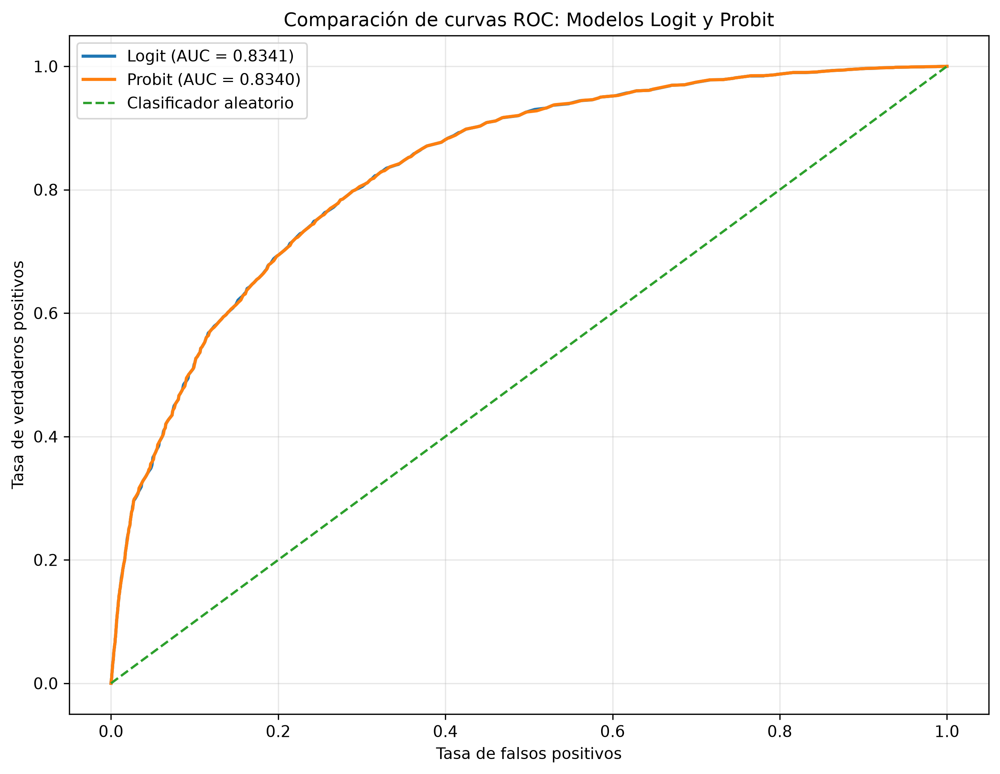

Factores asociados a la probabilidad de trabajar en Ecuador
Modelos Logit y Probit
Universidad: Universidad Técnica de Cotopaxi
Carrera: Economía
Asignatura: Econometría
Autora: Jeniffer Orosco
Fuente: Encuesta de Condiciones de Vida (ECV6R) - INEC Ecuador
Repositorio GitHub: Ver proyecto en GitHub
Aplicación web: Abrir aplicación en Vercel
¿Qué factores se encuentran asociados con la probabilidad de que una persona se encuentre trabajando?
Analizar los factores asociados con la probabilidad de trabajar mediante modelos econométricos de respuesta binaria Logit y Probit.
Se utiliza información de la Encuesta de Condiciones de Vida (ECV6R) del Instituto Nacional de Estadística y Censos (INEC).
| Elemento | Descripción |
|---|---|
| Unidad de observación | Persona |
| Observaciones | 85.950 |
| Modelos | Logit / Probit |
| Factor de expansión | FEXP |
| Variable | Descripción |
|---|---|
| trabaja | Variable dependiente binaria |
| hombre | Indicador de sexo masculino |
| EDAD | Edad de la persona |
| edad² | Término cuadrático de la edad |
| urbano | Indicador de residencia urbana |
| FEXP | Factor de expansión |
Se estimaron modelos Logit y Probit para analizar la probabilidad de que una persona se encuentre trabajando. Se incorporaron variables relacionadas con sexo, edad y área de residencia.
Para la edad se incluyó también su término cuadrático con el objetivo de representar una posible relación no lineal.
También se calcularon efectos marginales promedio, AUC, accuracy, matriz de confusión y factores de inflación de la varianza (VIF).
| Variable | Logit | Probit |
|---|---|---|
| hombre | 0.2017 | 0.2035 |
| EDAD | 0.0461 | 0.0464 |
| edad² | -0.0005 | -0.0005 |
| urbano | -0.1443 | -0.1435 |
| Modelo | Pseudo R² | AIC | Log-Likelihood | AUC |
|---|---|---|---|---|
| Logit | 0.274846 | 83332.02 | -41661.01 | 0.834103 |
| Probit | 0.274506 | 83371.11 | -41680.55 | 0.834030 |
Ambos modelos presentan resultados muy similares. El modelo Logit presenta ligeramente menor AIC, un pseudo R² ligeramente superior y un AUC marginalmente mayor. Por estas razones, constituye la especificación preferida dentro de esta comparación.
| Variable | VIF |
|---|---|
| hombre | 1.0006 |
| EDAD | 16.8969 |
| edad² | 16.9013 |
| urbano | 1.0052 |
Los VIF elevados de EDAD y edad² son esperables debido a la relación matemática entre una variable y su transformación cuadrática. Esto debe considerarse al interpretar los coeficientes individuales.
| Predicción 0 | Predicción 1 | |
|---|---|---|
| Real 0 | 21.547 | 11.912 |
| Real 1 | 7.749 | 44.742 |
El modelo Logit presenta un AUC de 0.8341, lo que evidencia una capacidad de discriminación adecuada.
El modelo Probit presenta un AUC de 0.8340, prácticamente equivalente al obtenido mediante Logit.

Las curvas ROC de ambos modelos son prácticamente coincidentes. El AUC del Logit es 0.834103 y el AUC del Probit es 0.834030, por lo que ambos presentan una capacidad predictiva muy similar.

Los resultados muestran asociaciones estadísticamente significativas entre las características individuales consideradas y la probabilidad de trabajar.
El efecto marginal promedio asociado con la variable hombre es positivo, mientras que el correspondiente a urbano es negativo en la especificación estimada.
La edad presenta un efecto positivo acompañado de un término cuadrático negativo, lo que sugiere una relación no lineal entre edad y probabilidad de trabajar.
Los resultados deben interpretarse como asociaciones estadísticas y no como evidencia de relaciones causales.
Los modelos Logit y Probit permiten estudiar la probabilidad de trabajar a partir de características individuales y territoriales.
Los resultados de ambos modelos son similares y presentan una capacidad predictiva razonable.
El modelo Logit presenta un AUC de 0.8341 y una exactitud de clasificación de 0.7713.
Entre las limitaciones se encuentra el tratamiento del diseño muestral de la encuesta y la utilización del factor de expansión sin incorporar necesariamente todos los componentes del diseño complejo.
Gujarati, D. N., & Porter, D. C. (2009). Basic Econometrics (5th ed.). McGraw-Hill.
Greene, W. H. (2012). Econometric Analysis (7th ed.). Pearson.
Long, J. S., & Freese, J. (2014). Regression Models for Categorical Dependent Variables Using Stata (3rd ed.). Stata Press.
Wooldridge, J. M. (2010). Econometric Analysis of Cross Section and Panel Data (2nd ed.). MIT Press.
Instituto Nacional de Estadística y Censos (INEC). Encuesta de Condiciones de Vida (ECV6R). Ecuador.